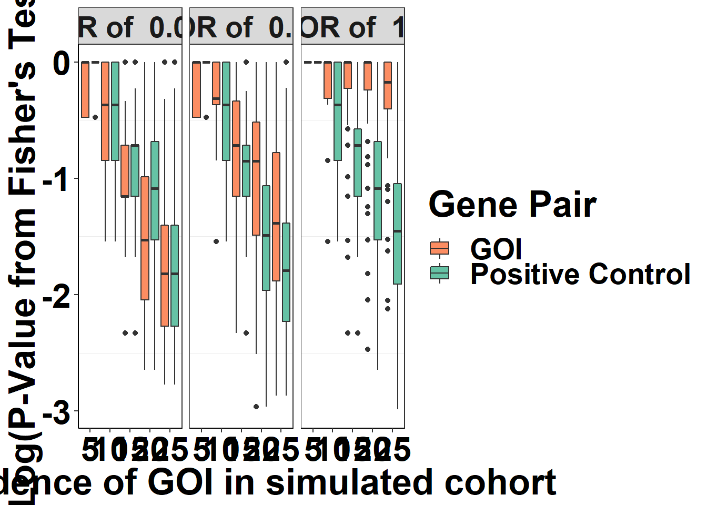

Last updated: 2019-03-07
Checks: 6 0
Knit directory: pair_con_select/
This reproducible R Markdown analysis was created with workflowr (version 1.2.0). The Report tab describes the reproducibility checks that were applied when the results were created. The Past versions tab lists the development history.
Great! Since the R Markdown file has been committed to the Git repository, you know the exact version of the code that produced these results.
Great job! The global environment was empty. Objects defined in the global environment can affect the analysis in your R Markdown file in unknown ways. For reproduciblity it’s best to always run the code in an empty environment.
The command set.seed(20190211) was run prior to running the code in the R Markdown file. Setting a seed ensures that any results that rely on randomness, e.g. subsampling or permutations, are reproducible.
Great job! Recording the operating system, R version, and package versions is critical for reproducibility.
Nice! There were no cached chunks for this analysis, so you can be confident that you successfully produced the results during this run.
Great! You are using Git for version control. Tracking code development and connecting the code version to the results is critical for reproducibility. The version displayed above was the version of the Git repository at the time these results were generated.
Note that you need to be careful to ensure that all relevant files for the analysis have been committed to Git prior to generating the results (you can use wflow_publish or wflow_git_commit). workflowr only checks the R Markdown file, but you know if there are other scripts or data files that it depends on. Below is the status of the Git repository when the results were generated:
Untracked files:
Untracked: .Rproj.user/
Untracked: code/alldata_compiler.R
Untracked: code/contab_maker.R
Untracked: code/mut_excl_genes_datapoints.R
Untracked: code/mut_excl_genes_generator.R
Untracked: code/quadratic_solver.R
Untracked: code/simresults_generator.R
Untracked: data/ALKATI_ccle.csv
Untracked: data/All_Data_V2.csv
Untracked: data/CCLE_NP24.2009_Drug_data_2015.02.24.csv
Untracked: data/alkati_growthcurvedata.csv
Untracked: data/alkati_growthcurvedata_popdoublings.csv
Untracked: data/alkati_melanoma_vemurafenib_figure_data.csv
Untracked: data/alkati_simulations_compiled_1000_12319.csv
Untracked: data/all_data.csv
Untracked: data/tcga_luad_expression/
Untracked: data/tcga_skcm_expression/
Untracked: docs/figure/Filteranalysis.Rmd/
Untracked: output/alkati_ccle_tae684_plot.pdf
Untracked: output/alkati_filtercutoff_allfilters.csv
Untracked: output/alkati_luad_exonimbalance.pdf
Untracked: output/alkati_mtn_pval_fig2B.pdf
Untracked: output/alkati_skcm_exonimbalance.pdf
Untracked: output/all_data_luad.csv
Untracked: output/all_data_luad_egfr.csv
Untracked: output/all_data_skcm.csv
Untracked: output/baf3_alkati_figure_deltaadjusted_doublings.pdf
Untracked: output/baf3_barplot.pdf
Untracked: output/baf3_elisa_barplot.pdf
Untracked: output/egfr_luad_exonimbalance.pdf
Untracked: output/fig1c_3719_4.pdf
Untracked: output/fig2b2_filtercutoff_atinras_totalalk.pdf
Untracked: output/fig2b_filtercutoff_atibraf.pdf
Untracked: output/fig2b_filtercutoff_atinras.pdf
Untracked: output/luad_alk_exon_expression.csv
Untracked: output/luad_egfr_exon_expression.csv
Untracked: output/melanoma_vemurafenib_fig.pdf
Untracked: output/skcm_alk_exon_expression.csv
Unstaged changes:
Deleted: .Rprofile
Deleted: .gitignore
Modified: analysis/ALKATI_Filter_Cutoff_Analysis.Rmd
Modified: analysis/baf3_alkati_transformations.Rmd
Modified: analysis/practice.Rmd
Deleted: docs/.nojekyll
Modified: pair_con_select.Rproj
Note that any generated files, e.g. HTML, png, CSS, etc., are not included in this status report because it is ok for generated content to have uncommitted changes.
These are the previous versions of the R Markdown and HTML files. If you’ve configured a remote Git repository (see ?wflow_git_remote), click on the hyperlinks in the table below to view them.
| File | Version | Author | Date | Message |
|---|---|---|---|---|
| Rmd | ae888d0 | haiderinam | 2019-03-07 | Published Analysis on performing pairwise comparisons in |
These simulation have been optimized to used parallel computing. Please note that true_OR refers to the odds ratio of the gene of interest with a positive control
Please note that or_pair2 refers to teh odds ratio between the two positive controls (generally low)
Note to self: just convert all the “true OR” variables to or_pair1
##GenePair1
cores=detectCores()
cl= makeCluster(cores[1]-1)
registerDoParallel(cl)
tic()
or_pair1=c(.01,.05,.1,.2,.3,.4,.5,.6,.7,.8,.9,1)
or_pair2=seq(.01,.1,by=.02)
incidence=seq(4,36,by=1)
cohort_size=seq(100,1000,by=200)
# unlist(mut_excl_genes_generator(500,25,.4,.01)[1])
# or_pair1=c(.01,.05,.1,.2,.3,.4,.5,.6,.7,.8,.9,1)
# or_pair2=seq(.01,.01)
# incidence=seq(4,50,by=1)
# cohort_size=seq(500,500)
# or_pair1=.8
# or_pair2=.01
# incidence=25
# cohort_size=500
true_or_vals=or_pair1
cohort_size_vals=cohort_size
gene1_total_vals=incidence
# simresults_compiled=as.data.frame(matrix(nrow=1,ncol=12)) #10 because there is an OR vals column being added at the end of the simulations
simresults_compiled=as.list(seq_len(length(or_pair2)*length(or_pair1)*length(incidence)*length(cohort_size)))
ct=1
# for(j in 1:length(gene1_total_vals)){
parfunc=foreach(j =1:length(gene1_total_vals),.combine = rbind)%dopar%{
for(l in 1:length(or_pair2)){
for(k in 1:length(cohort_size_vals)){
for(i in 1:length(true_or_vals)){
gene_pair_1=unlist(mut_excl_genes_generator(cohort_size[k],incidence[j],or_pair1[i],or_pair2[l])[1])
gene_pair_2=unlist(mut_excl_genes_generator(cohort_size[k],incidence[j],or_pair1[i],or_pair2[l])[2])
alldata_1=mut_excl_genes_datapoints(gene_pair_1)
alldata_2=mut_excl_genes_datapoints(gene_pair_2)
alldata_comp_1=alldata_compiler(alldata_1,"gene2","gene3","gene1",'N',"N/A","N/A")[[2]]
genex_replication_prop_1=alldata_compiler(alldata_1,"gene2","gene3","gene1",'N',"N/A","N/A")[[1]]
alldata_comp_2=alldata_compiler(alldata_2,"gene2","gene3","gene1",'N',"N/A","N/A")[[2]]
genex_replication_prop_2=alldata_compiler(alldata_2,"gene2","gene3","gene1",'N',"N/A","N/A")[[1]]
#Number of simulations are the minimum of: subsampling with replacement combinations of incidence of gene pair 1, pair 2, and 10000. 10000 because I don't want to do more than 1k simulations per experiment.
nsims=min(c(choose(sum(alldata_comp_1$genex)+sum(alldata_comp_1$genex)-1,sum(alldata_comp_1$genex)),
choose(sum(alldata_comp_2$genex)+sum(alldata_comp_2$genex)-1,sum(alldata_comp_2$genex)),1000))
# nsubsamples=sum(alldata_comp_2$genex) #Verify that this is what it is.
# Max subsample size is whichever integer is the minimum of:
# number of genex in sample vs. number of NOTgenex or PC1 or PC2 in sample*genexreplication proportion. For example we had 165 PC1s, therefore 340-175=165 PC1s in our data. Since we want to sample 7.35% positive hits and 92.65% negative hits, a sample containing too many positive hits can impose an upper bound on our subsampling size.
alldata_comp=alldata_comp_1
genex_replication_prop=genex_replication_prop_1
maxsubsamplesize_1=min(c(genex_replication_prop*length(alldata_comp$Positive_Ctrl1),
floor((length(alldata_comp$Positive_Ctrl1)-sum(alldata_comp$Positive_Ctrl1))*genex_replication_prop),
floor((length(alldata_comp$Positive_Ctrl1)-sum(alldata_comp$Positive_Ctrl2))*genex_replication_prop),
floor((length(alldata_comp$Positive_Ctrl1)-sum(alldata_comp$genex))*genex_replication_prop)))
alldata_comp=alldata_comp_2
genex_replication_prop=genex_replication_prop_2
maxsubsamplesize_2=min(c(genex_replication_prop*length(alldata_comp$Positive_Ctrl1),
floor((length(alldata_comp$Positive_Ctrl1)-sum(alldata_comp$Positive_Ctrl1))*genex_replication_prop),
floor((length(alldata_comp$Positive_Ctrl1)-sum(alldata_comp$Positive_Ctrl2))*genex_replication_prop),
floor((length(alldata_comp$Positive_Ctrl1)-sum(alldata_comp$genex))*genex_replication_prop)))
nsubsamples=min(c(maxsubsamplesize_1,maxsubsamplesize_2)) #minimum of either of the subsamples.
nexperiments=7
#####If Cohort size is greater than gene1total, run simresults_generator for that simulation####
if(cohort_size_vals[k]>gene1_total_vals[j]){
simresults_pair1=simresults_generator(alldata_comp_1,7)
simresults_pair1$gene_pair=1
simresults_pair2=simresults_generator(alldata_comp_2,7)
simresults_pair2$gene_pair=2
simresults=rbind(simresults_pair1,simresults_pair2)
simresults=as.data.frame(simresults, stringsAsFactors = F)
simresults$true_OR=true_or_vals[i]
simresults$gene1_total=gene1_total_vals[j]
simresults$cohort_size=cohort_size_vals[k]
simresults$or_pair2=or_pair2[l]
# colnames(simresults_compiled)=names(simresults)
# simresults_compiled[[i+j+k+l-3]]=simresults
simresults_compiled[[ct]]=simresults
# simresults_compiled=rbind(simresults_compiled,simresults)
}
ct=ct+1
}
}
}
simresults_compiled
}
simresults_compiled=parfunc
simresults_compiled2=do.call(rbind,simresults_compiled)
stopCluster(cl)
toc()
# tic()
# pair1=simresults_generator(alldata_comp_1,7)
# pair1$gene_pair=1
# pair2=simresults_generator(alldata_comp_1,7)
# pair2$gene_pair=2
# aaa=rbind(pair1,pair2)
# a=c()
# a=rbind(a,aaa)
# toc()
# write.csv(simresults_compiled2,"alkati_simulations_compiled_12219.csv")
write.csv(simresults_compiled2,"data/alkati_simulations_compiled_1000_3719.csv")
# simresults_compiled[[5]]
#Looking at which conditions didn't yield a maxsimnumber of 1000 revealed that at a subsample size of 1, the max simnum was 35.
# a=simresults_compiled2%>%
# group_by(subsample_size,exp_num,gene_pair,gene1_total,cohort_size,or_pair2)%>%
# summarize(maxsimnum=max(sim_num))simresults_compiled2=read.csv("data/alkati_simulations_compiled_1000_12319.csv",header = T)
# simresults_compiled2=read.csv("alkati_simulations_compiled_testrun_10000.csv",header = T)
# simresults_compiled2=read.csv("alkati_simulations_compiled.csv",header = T)
simresults_stored=simresults_compiled2
simresults_compiled2=simresults_stored
simresults_compiled2=simresults_compiled2%>%
filter((exp_num==2&gene_pair==2)|(exp_num==2&gene_pair==1))
simresults_compiled2=simresults_compiled2[,c(1,2,5,6,4,9,11,3,12,10,13,7,8)] ###This changes the simresults' columns to a more intuitive order
# simresults_compiled_concat=simresults_compiled2[,c(-1,-2,-3)]
# write.csv(simresults_compiled_concat,"alkati_simulations_compiled_1000_12319_filtered.csv")
datapoints_reshape=dcast(simresults_compiled2,exp_name+sim_num+gene1_total+subsample_size+cohort_size+true_OR+or_pair2~gene_pair,fun.aggregate = mean,value.var="p_val")
colnames(datapoints_reshape)[8]="pair1_pval"
colnames(datapoints_reshape)[9]="pair2_pval"
###Performing KS test on the ps_p1_genex for genepair1 vs gene2
ks_results=datapoints_reshape%>%
group_by(gene1_total,cohort_size,true_OR,or_pair2)%>%
summarize(ks_pval=ks.test(pair1_pval,pair2_pval,alternative="less")$p.value)
# summarize(ks_pval=ks.test(pair1_pval,pair2_pval,alternative="less")$p.value)
###Summarizing data so that min_incidence is the minimum incidence that gives a p-value for all cohorts
a=ks_results%>%
group_by(cohort_size,true_OR,or_pair2)%>%
summarize(sig_incidence=gene1_total[ks_pval<=.05][1])
a2=a%>%
filter(cohort_size==500,or_pair2%in%c(.01))
##Note: these labels are only accurate for the or_pair2=.01 cohort
# label.df <- data.frame(
# rbind(
# # data.frame(
# # true_OR=c(.01),
# # gene1_total = c(19),
# # p_val = c(1),
# # gene_pair=c(2)),
# data.frame(
# true_OR=c(.1),
# gene1_total = c(9),
# p_val = c(1),
# gene_pair=c(2)),
# data.frame(
# true_OR=c(1),
# gene1_total = c(7),
# p_val = c(1),
# gene_pair=c(2))))
simresults_test=simresults_compiled2%>%
filter(cohort_size==500,or_pair2==.01,true_OR%in%c(.01,.1,1),gene1_total%in%seq(4,25,1))
simresults_test$true_OR=paste('OR of ',simresults_test$true_OR)
###Choosing parameters that most closely match ALKATI 3/6/19
simresults_test=simresults_compiled2%>%
filter(cohort_size==300,or_pair2==.01,true_OR%in%c(.01,.1,1),gene1_total%in%seq(4,25,1))
simresults_test$true_OR=paste('OR of ',simresults_test$true_OR)
ggplot(simresults_test,aes(x=factor(gene1_total),y=log10(p_val),fill=factor(gene_pair)))+
geom_boxplot(position = position_dodge(1))+
facet_wrap(~true_OR,ncol=4)+
# geom_text(data = label.df, label = "*",size=15,color="black")+
scale_fill_brewer(palette = "Set2",name="Gene Pair",labels=c("GOI", "Positive Control"),direction = -1)+
cleanup+
scale_y_continuous(name="Log(P-Value from Fisher's Test)",
limits = c(-3,0))+
scale_x_discrete(name="Incidence of GOI in simulated cohort",limits=c("5","10","15","20","25"))+
theme(plot.title = element_text(hjust=.5),
text = element_text(size=26,face="bold"),
axis.title = element_text(face="bold",size="26",color="black"),
axis.text=element_text(face="bold",size="24",color="black"))
# ggsave("output/fig1c_3719_4.pdf",height = 8,width = 20,units = "in")
# +xlab("Subsample Size")+ylab("P-value")+theme_bw()+theme(plot.title = element_text(hjust=.5),text = element_text(size=26,face="bold"),axis.title = element_text(face="bold",size="26"),axis.text=element_text(face="bold",size="26"))
# +scale_color_discrete(name="Pairwise \nComparison\n",labels=c("OR 0.1 to 1\n","OR 0.1 to 0.01"))
# If you wanna look at true_OR on the x-axis:
# simresults_test=simresults_compiled2%>%
# filter(cohort_size==500,or_pair2==.01,gene1_total%in%c(10))
# ggplot(simresults_test,aes(x=factor(true_OR),y=p_val,fill=factor(gene_pair)))+
# geom_boxplot(position = position_dodge(1))+
# facet_wrap(~factor(gene1_total))
sessionInfo()R version 3.5.2 (2018-12-20)
Platform: x86_64-w64-mingw32/x64 (64-bit)
Running under: Windows Server x64 (build 17763)
Matrix products: default
locale:
[1] LC_COLLATE=English_United States.1252
[2] LC_CTYPE=English_United States.1252
[3] LC_MONETARY=English_United States.1252
[4] LC_NUMERIC=C
[5] LC_TIME=English_United States.1252
attached base packages:
[1] parallel grid stats graphics grDevices utils datasets
[8] methods base
other attached packages:
[1] ggsignif_0.5.0 usethis_1.4.0 devtools_2.0.1
[4] RColorBrewer_1.1-2 reshape2_1.4.3 ggplot2_3.1.0
[7] doParallel_1.0.14 iterators_1.0.10 foreach_1.4.4
[10] dplyr_0.8.0.1 VennDiagram_1.6.20 futile.logger_1.4.3
[13] workflowr_1.2.0 tictoc_1.0 knitr_1.21
loaded via a namespace (and not attached):
[1] tidyselect_0.2.5 xfun_0.5 remotes_2.0.2
[4] purrr_0.3.1 colorspace_1.4-0 htmltools_0.3.6
[7] yaml_2.2.0 rlang_0.3.1 pkgbuild_1.0.2
[10] pillar_1.3.1 glue_1.3.0 withr_2.1.2
[13] lambda.r_1.2.3 sessioninfo_1.1.1 plyr_1.8.4
[16] stringr_1.4.0 munsell_0.5.0 gtable_0.2.0
[19] codetools_0.2-15 evaluate_0.13 memoise_1.1.0
[22] labeling_0.3 callr_3.1.1 ps_1.3.0
[25] Rcpp_1.0.0 scales_1.0.0 backports_1.1.3
[28] formatR_1.6 desc_1.2.0 pkgload_1.0.2
[31] fs_1.2.6 digest_0.6.18 stringi_1.3.1
[34] processx_3.2.1 rprojroot_1.3-2 cli_1.0.1
[37] tools_3.5.2 magrittr_1.5 lazyeval_0.2.1
[40] tibble_2.0.1 futile.options_1.0.1 crayon_1.3.4
[43] whisker_0.3-2 pkgconfig_2.0.2 prettyunits_1.0.2
[46] assertthat_0.2.0 rmarkdown_1.11 R6_2.4.0
[49] git2r_0.24.0 compiler_3.5.2